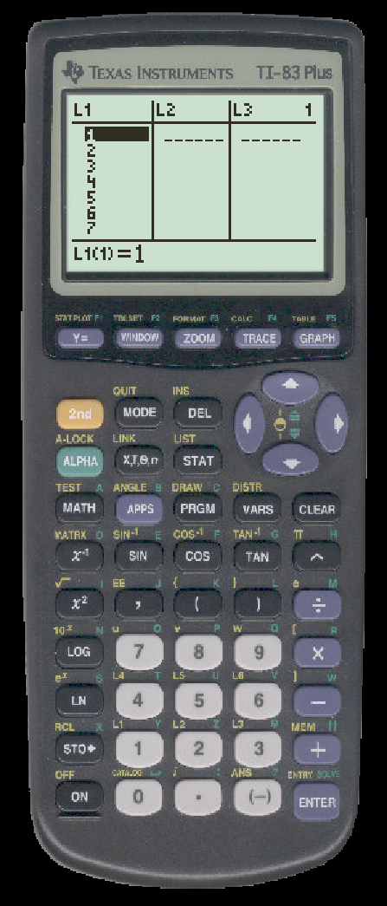
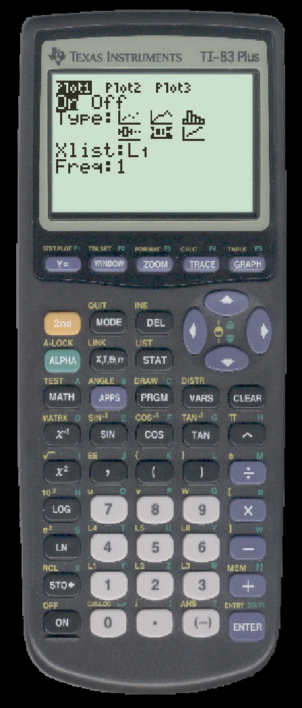
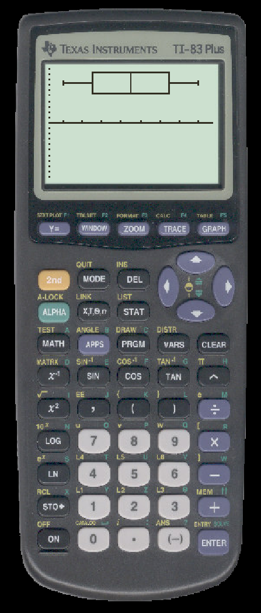

TO DRAW A BOXPLOT ON THE TI
- Enter your data into a list. We will use L1.

- Press 2nd-STAT PLOT
- Press ENTER to select Plot1
- If necessary, press ENTER to turn on Plot1.
- Use the arrows to maneuver to the plot that looks like a boxplot.

- Make sure the Xlist corresponds to where you entered data.
- Press ZOOM
- Select ZoomStat
